SocialCalc
by Audrey Tang
The history of spreadsheets spans more than 30 years. The first spreadsheet program, VisiCalc, was conceived by Dan Bricklin in 1978 and shipped in 1979. The original concept was quite straightforward: a table that spans infinitely in two dimensions, its cells populated with text, numbers, and formulas. Formulas are composed of normal arithmetic operators and various built-in functions, and each formula can use the current contents of other cells as values.
Although the metaphor was simple, it had many applications: accounting, inventory, and list management are just a few. The possibilities were practically limitless. All these uses made VisiCalc into the first “killer app” of the personal computer era.
In the decades that followed successors like Lotus 1-2-3 and Excel made incremental improvements, but the core metaphor stayed the same. Most spreadsheets were stored as on-disk files, and loaded into memory when opened for editing. Collaboration was particularly hard under the file-based model:
-
Each user needed to install a version of the spreadsheet editor.
-
E-mail ping-pong, shared folders, or setting up a dedicated version-control system all added bookkeeping overhead.
-
Change tracking was limited; for example, Excel does not preserve history for formatting changes and cell comments.
-
Updating formatting or formulas in templates required painstaking changes to existing spreadsheet files that used that template.
Fortunately, a new collaboration model emerged to address these issues with elegant simplicity. It is the wiki model, invented by Ward Cunningham in 1994, and popularized by Wikipedia in the early 2000s.
Instead of files, the wiki model features server-hosted pages, editable in the browser without requiring special software. Those hypertext pages can easily link to each other, and even include portions of other pages to form a larger page. All participants view and edit the latest version by default, with revision history automatically managed by the server.
Inspired by the wiki model, Dan Bricklin started working on WikiCalc in 2005. It aims to combine the authoring ease and multi-person editing of wikis with the familiar visual formatting and calculating metaphor of spreadsheets.
WikiCalc
The first version of WikiCalc (Figure 1) had several features that set it apart from other spreadsheets at the time:
-
Plain text, HTML, and wiki-style markup rendering for text data.
-
Wiki-style text that includes commands to insert links, images, and values from cell references.
-
Formula cells may reference values of other WikiCalc pages hosted on other websites.
-
Ability to create output to be embedded in other web pages, both static and live data.
-
Cell formatting with access to CSS style attributes and CSS classes.
-
Logging of all edit operations as an audit trail.
-
Wiki-like retention of each new version of a page with roll-back capability.
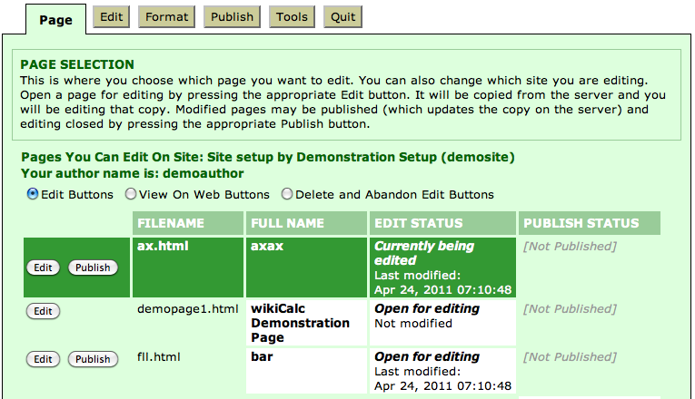
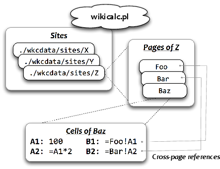
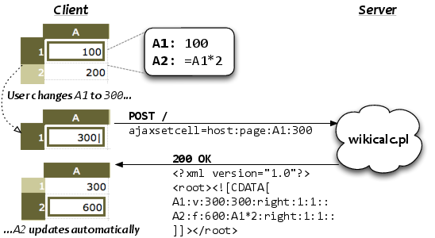
WikiCalc 1.0’s internal architecture (Figure 2) and information flow (Figure 3) were deliberately simple, but nevertheless powerful. The ability to compose a master spreadsheet from several smaller spreadsheets proved particularly handy. For example, imagine a scenario where each salesperson keeps numbers in a spreadsheet page. Each sales manager then rolls up their reps’ numbers into a regional spreadsheet, and the VP of sales then rolls up the regional numbers into a top-level spreadsheet.
Each time one of the individual spreadsheets is updated, all the roll-up spreadsheets can reflect the update. If someone wants further detail, they simply click through to view the spreadsheet behind the spreadsheet. This roll-up capability eliminates the redundant and error-prone effort of updating numbers in multiple places, and ensures all views of the information stay fresh.
To ensure the recalculations are up-to-date, WikiCalc adopted a thin-client design, keeping all the state information on the server side. Each spreadsheet is represented on the browser as a <``table``> element; editing a cell will send an ajaxsetcell call to the server, and the server then tells the browser which cells need updating.
Unsurprisingly, this design depends on a fast connection between the browser and the server. When the latency is high, users will start to notice the frequent appearance of “Loading…” messages between updating a cell and seeing its new contents as shown in Figure 4. This is especially a problem for users interactively editing formulas by tweaking the input and expecting to see results in real time.
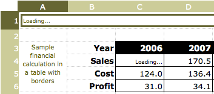
Moreover, because the <``table``> element had the same dimensions as the spreadsheet, a $100{\times}100$ grid would create 10,000 <``td``> DOM objects, which strains the memory resource of browsers, further limiting the size of pages.
Due to these shortcomings, while WikiCalc was useful as a stand-alone server running on localhost, it was not very practical to embed as part of web-based content management systems.
In 2006, Dan Bricklin teamed up with Socialtext to start developing SocialCalc, a ground-up rewrite of WikiCalc in Javascript based on some of the original Perl code.
This rewrite was aimed at large, distributed collaborations, and sought to deliver a look and feel more like that of a desktop app. Other design goals included:
-
Capable of handling hundreds of thousands of cells.
-
Fast turnaround time for edit operations.
-
Client-side audit trail and undo/redo stack.
-
Better use of Javascript and CSS to provide full-fledged layout functionality.
-
Cross-browser support, despite the more extensive use of responsive Javascript.
After three years of development and various beta releases, Socialtext released SocialCalc 1.0 in 2009, successfully meeting the design goals. Let’s now take a look at the architecture of the SocialCalc system.
SocialCalc
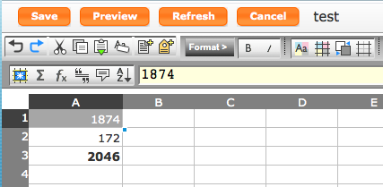
Figure 5 and Figure 6 show SocialCalc’s interface and classes respectively. Compared to WikiCalc, the server’s role has been greatly reduced. Its only responsibility is responding to HTTP GETs by serving entire spreadsheets serialized in the save format; once the browser receives the data, all calculations, change tracking and user interaction are now implemented in Javascript.
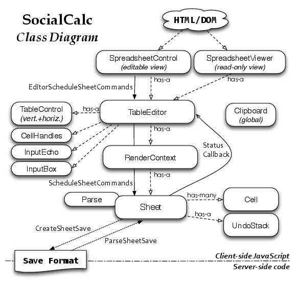
The Javascript components were designed with a layered MVC (Model/View/Controller) style, with each class focusing on a single aspect:
::: description Sheet is the data model, representing an in-memory structure of a spreadsheet. It contains a dictionary from coordinates to Cell objects, each representing a single cell. Empty cells need no entries, and hence consume no memory at all.
Cell represents a cell’s content and formats. Some common properties are shown in Table: Cell Contents and Formats.
RenderContext implements the view; it is responsible for rendering a sheet into DOM objects.
TableControl is the main controller, accepting mouse and keyboard events. As it receives view events such as scrolling and resizing, it updates its associated RenderContext object. As it receives update events that affects the sheet’s content, it schedules new commands to the sheet’s command queue.
SpreadSheetControl is the top-level UI with toolbars, status bars, dialog boxes and color pickers.
SpreadSheetViewer is an alternate top-level UI that provides a read-only interactive view. :::
::: {#tbl.soc.cellcontents}
datatype t
datavalue 1Q84
color black
bgcolor white
font italic bold 12pt Ubuntu
comment Ichi-Kyu-Hachi-Yon
- Cell Contents and Formats
:::
We adopted a minimal class-based object system with simple composition/delegation, and make no use of inheritance or object prototypes. All symbols are placed under the SocialCalc.* namespace to avoid naming conflicts.
Each update on the sheet goes through the ScheduleSheetCommands method, which takes a command string representing the edit. (Some common commands are show in Table: SocialCalc Commands.) The application embedding SocialCalc may define extra commands on their own, by adding named callbacks into the SocialCalc.SheetCommandInfo.CmdExtensionCallbacks object, and use the startcmdextension command to invoke them.
set sheet defaultcolor blue
set A width 100
set A1 value n 42
set A2 text t Hello
set A3 formula A1*2
set A4 empty
set A5 bgcolor green
merge A1:B2
unmerge A1
erase A2
cut A3
paste A4
copy A5
sort A1:B9 A up B down
name define Foo A1:A5
name desc Foo Used in formulas like SUM(Foo)
name delete Foo
startcmdextension UserDefined args
Command Run-loop
To improve responsiveness, SocialCalc performs all recalculation and DOM updates in the background, so the user can keep making changes to several cells while the engine catches up on earlier changes in the command queue.
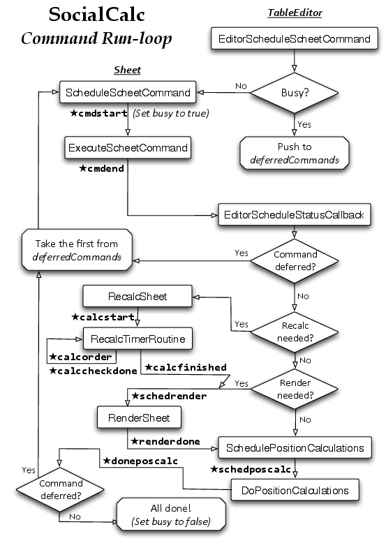
When a command is running, the TableEditor object sets its busy flag to true; subsequent commands are then pushed into the deferredCommands queue, ensuring a sequential order of execution. As the event loop diagram in Figure 7 shows, the Sheet object keeps sending StatusCallback events to notify the user of the current state of command execution, through each of the four steps:
::: description
ExecuteCommand: Sends cmdstart upon start, and cmdend when the command finishes execution. If the command changed a cell’s value indirectly, enter the Recalc step. Otherwise, if the command changed the visual appearance of one or more on-screen cells, enter the Render step. If neither of the above applies (for example with the copy command), skip to the PositionCalculations step.
Recalc (as needed): Sends calcstart upon start, calcorder every 100ms when checking the dependency chain of cells, calccheckdone when the check finishes, and calcfinished when all affected cells received their re-calculated values. This step is always followed by the Render step.
Render (as needed): Sends schedrender upon start, and renderdone when the <``table``> element is updated with formatted cells. This step is always followed by PositionCalculations.
PositionCalculations: Sends schedposcalc upon start, and doneposcalc after updating the scrollbars, the current editable cell cursor, and other visual components of the TableEditor.
:::
Because all commands are saved as they are executed, we naturally get an audit log of all operations. The Sheet.CreateAuditString method provides a newline-delimited string as the audit trail, with each command in a single line.
ExecuteSheetCommand also creates an undo command for each command it executes. For example, if the cell A1 contains “Foo” and the user executes set A1 text Bar, then an undo-command set A1 text Foo is pushed to the undo stack. If the user clicks Undo, then the undo-command is executed to restore A1 to its original value.
Table Editor
Now let’s look at the TableEditor layer. It calculates the on-screen coordinates of its RenderContext, and manages horizontal/vertical scroll bars through two TableControl instances.
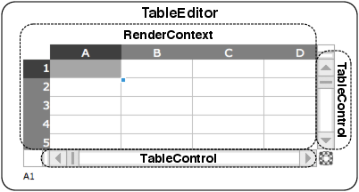
The view layer, handled by the RenderContext class, also differs from WikiCalc’s design. Instead of mapping each cell to a <``td``> element, we now simply create a fixed-size <``table``> that fits the browser’s visible area, and pre-populate it with <``td``> elements.
As the user scrolls the spreadsheet through our custom-drawn scroll bars, we dynamically update the innerHTML of the pre-drawn <``td``> elements. This means we don’t need to create or destroy any <``tr``> or <``td``> elements in many common cases, which greatly speeds up response time.
Because RenderContext only renders the visible region, the size of Sheet object can be arbitrarily large without affecting its performance.
TableEditor also contains a CellHandles object, which implements the radial fill/move/slide menu attached to the bottom-right corner to the current editable cell, known as the ECell, shown in Figure 9.
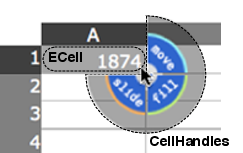
The input box is managed by two classes: InputBox and InputEcho. The former manages the above-the-grid edit row, while the latter shows an updated-as-you-type preview layer, overlaying the ECell’s content (Figure 10).
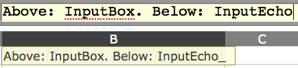
Usually, the SocialCalc engine only needs to communicate to the server when opening a spreadsheet for edit, and when saving it back to server. For this purpose, the Sheet.ParseSheetSave method parses a save format string into a Sheet object, and the Sheet.CreateSheetSave method serializes a Sheet object back into the save format.
Formulas may refer to values from any remote spreadsheet with a URL. The recalc command re-fetches the externally referenced spreadsheets, parses them again with Sheet.ParseSheetSave, and stores them in a cache so the user can refer to other cells in the same remote spreadsheets without re-fetching its content.
Save Format
The save format is in standard MIME multipart/mixed format, consisting of four text/plain; charset=UTF-8 parts, each part containing newline-delimited text with colon-delimited data fields. The parts are:
-
The
metapart lists the types of the other parts. -
The
sheetpart lists each cell’s format and content, each column’s width (if not default), the sheet’s default format, followed by a list of fonts, colors and borders used in the sheet. -
The optional
editpart saves theTableEditor’s edit state, including ECell’s last position, as well as the fixed sizes of row/column panes. -
The optional
auditpart contains the history of commands executed in the previous editing session.
For example, Figure 11 shows a spreadsheet with three cells, with 1874 in A1 as the ECell, the formula 2^2*43 in A2, and the formula SUM(Foo) in A3 rendered in bold, referring to the named range Foo over A1:A2.
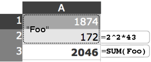
The serialized save format for the spreadsheet looks like this:
socialcalc:version:1.0
MIME-Version: 1.0
Content-Type: multipart/mixed; boundary=SocialCalcSpreadsheetControlSave
--SocialCalcSpreadsheetControlSave
Content-type: text/plain; charset=UTF-8
# SocialCalc Spreadsheet Control Save
version:1.0
part:sheet
part:edit
part:audit
--SocialCalcSpreadsheetControlSave
Content-type: text/plain; charset=UTF-8
version:1.5
cell:A1:v:1874
cell:A2:vtf:n:172:2^2*43
cell:A3:vtf:n:2046:SUM(Foo):f:1
sheet:c:1:r:3
font:1:normal bold * *
name:FOO::A1\cA2
--SocialCalcSpreadsheetControlSave
Content-type: text/plain; charset=UTF-8
version:1.0
rowpane:0:1:14
colpane:0:1:16
ecell:A1
--SocialCalcSpreadsheetControlSave
Content-type: text/plain; charset=UTF-8
set A1 value n 1874
set A2 formula 2^2*43
name define Foo A1:A2
set A3 formula SUM(Foo)
--SocialCalcSpreadsheetControlSave--
This format is designed to be human-readable, as well as being relatively easy to generate programmatically. This makes it possible for Drupal’s Sheetnode plugin to use PHP to convert between this format and other popular spreadsheet formats, such as Excel (.xls) and OpenDocument (.ods).
Now that we have a good idea about how the pieces in SocialCalc fit together, let’s look at two real-world examples of extending SocialCalc.
Rich-text Editing
The first example we’ll look at is enhancing SocialCalc’s text cells with wiki markup to display its rich-text rendering right in the table editor (Figure 12).
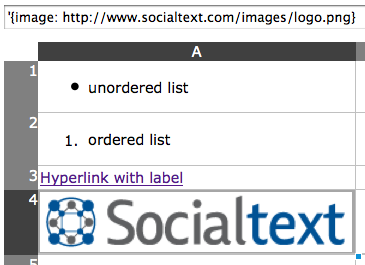
We added this feature to SocialCalc right after its 1.0 release, to address the popular request of inserting images, links and text markups using a unified syntax. Since Socialtext already has an open-source wiki platform, it was natural to re-use the syntax for SocialCalc as well.
To implement this, we need a custom renderer for the textvalueformat of text-wiki, and to change the default format for text cells to use it.
What is this textvalueformat, you ask? Read on.
Types and Formats
In SocialCalc, each cell has a datatype and a valuetype. Data cells with text or numbers correspond to text/numeric value types, and formula cells with datatype="f" may generate either numeric or text values.
Recall that on the Render step, the Sheet object generates HTML from each of its cells. It does so by inspecting each cell’s valuetype: If it begins with t, then the cell’s textvalueformat attribute determines how generation is done. If it begins with n, then the nontextvalueformat attribute is used instead.
However, if the cell’s textvalueformat or nontextvalueformat attribute is not defined explicitly, then a default format is looked up from its valuetype, as shown in Figure 13.
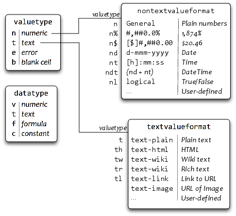
Support for the text-wiki value format is coded in SocialCalc.format_text_for_display:
if (SocialCalc.Callbacks.expand_wiki && /^text-wiki/.test(valueformat)) {
// do general wiki markup
displayvalue = SocialCalc.Callbacks.expand_wiki(
displayvalue, sheetobj, linkstyle, valueformat
);
}
Instead of inlining the wiki-to-HTML expander in format_text_for_display, we will define a new hook in SocialCalc.Callbacks. This is the recommended style throughout the SocialCalc codebase; it improves modularity by making it possible to plug in different ways of expanding wikitext, as well as keeping compatibility with embedders that do not desire this feature.
Rendering Wikitext
Next, we’ll make use of Wikiwyg1, a Javascript library offering two-way conversions between wikitext and HTML.
We define the expand_wiki function by taking the cell’s text, running it through Wikiwyg’s wikitext parser and its HTML emitter:
var parser = new Document.Parser.Wikitext();
var emitter = new Document.Emitter.HTML();
SocialCalc.Callbacks.expand_wiki = function(val) {
// Convert val from Wikitext to HTML
return parser.parse(val, emitter);
}
The final step involves scheduling the set sheet defaulttextvalueformat text-wiki command right after the spreadsheet initializes:
// We assume there's a <div id="tableeditor"/> in the DOM already
var spreadsheet = new SocialCalc.SpreadsheetControl();
spreadsheet.InitializeSpreadsheetControl("tableeditor", 0, 0, 0);
spreadsheet.ExecuteCommand('set sheet defaulttextvalueformat text-wiki');
Taken together, the Render step now works as shown in Figure 14.
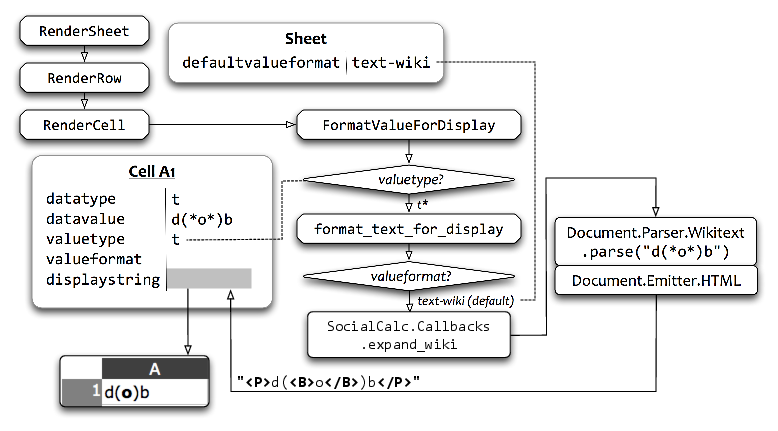
That’s all! The enhanced SocialCalc now supports a rich set of wiki markup syntax:
*bold* _italic_ `monospace` {{unformatted}}
> indented text
* unordered list
# ordered list
"Hyperlink with label"<http://softwaregarden.com/>
{image: http://www.socialtext.com/images/logo.png}
Try entering *bold* _italic_ ‘monospace‘ in A1, and you’ll see it rendered as rich text (Figure 15).
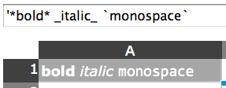
Real-time Collaboration
The next example we’ll explore is multi-user, real-time editing on a shared spreadsheet. This may seem complicated at first, but thanks to SocialCalc’s modular design all it takes is for each on-line user to broadcast their commands to other participants.
To distinguish between locally-issued commands and remote commands, we add an isRemote parameter to the ScheduleSheetCommands method:
SocialCalc.ScheduleSheetCommands = function(sheet, cmdstr, saveundo, isRemote) {
if (SocialCalc.Callbacks.broadcast && !isRemote) {
SocialCalc.Callbacks.broadcast('execute', {
cmdstr: cmdstr, saveundo: saveundo
});
}
// ...original ScheduleSheetCommands code here...
}
Now all we need to do is to define a suitable SocialCalc.Callbacks.broadcast callback function. Once it’s in place, the same commands will be executed on all users connected to the same spreadsheet.
When this feature was first implemented for OLPC (One Laptop Per Child2) by SEETA’s Sugar Labs3 in 2009, the broadcast function was built with XPCOM calls into D-Bus/Telepathy, the standard transport for OLPC/Sugar networks (see Figure 16).
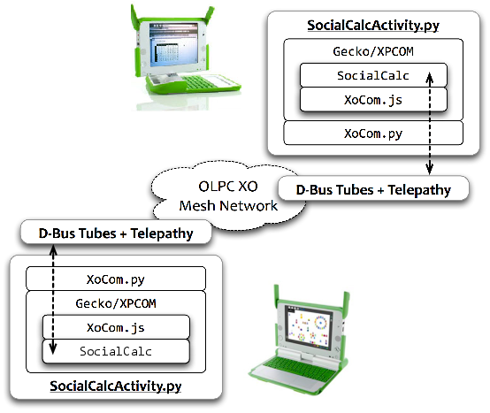
That worked reasonably well, enabling XO instances in the same Sugar network to collaborate on a common SocialCalc spreadsheet. However, it is both specific to the Mozilla/XPCOM browser platform, as well as to the D-Bus/Telepathy messaging platform.
Cross-browser Transport
To make this work across browsers and operating systems, we use the Web::Hippie4 framework, a high-level abstraction of JSON-over-WebSocket with convenient jQuery bindings, with MXHR (Multipart XML HTTP Request5) as the fallback transport mechanism if WebSocket is not available.
For browsers with Adobe Flash plugin installed but without native WebSocket support, we use the web_socket.js6 project’s Flash emulation of WebSocket, which is often faster and more reliable than MXHR. The operation flow is shown in Figure 17.
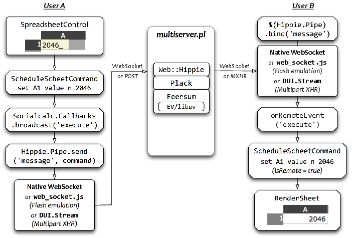
The client-side SocialCalc.Callbacks.broadcast function is defined as:
var hpipe = new Hippie.Pipe();
SocialCalc.Callbacks.broadcast = function(type, data) {
hpipe.send({ type: type, data: data });
};
$(hpipe).bind("message.execute", function (e, d) {
var sheet = SocialCalc.CurrentSpreadsheetControlObject.context.sheetobj;
sheet.ScheduleSheetCommands(
d.data.cmdstr, d.data.saveundo, true // isRemote = true
);
break;
});
Although this works quite well, there are still two remaining issues to resolve.
Conflict Resolution
The first one is a race-condition in the order of commands executed: If users A and B simultaneously perform an operation affecting the same cells, then receive and execute commands broadcast from the other user, they will end up in different states, as shown in Figure 18.
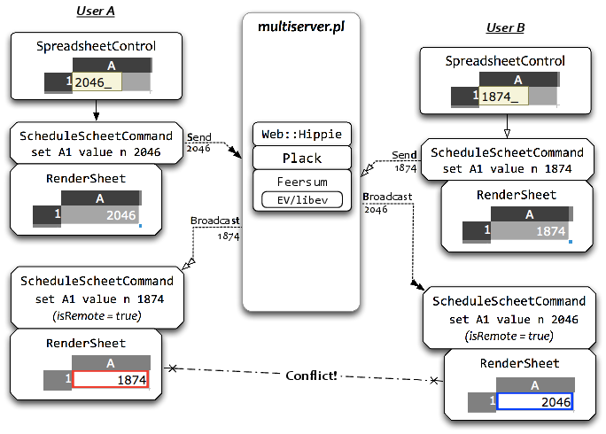
We can resolve this with SocialCalc’s built-in undo/redo mechanism, as shown in Figure 19.
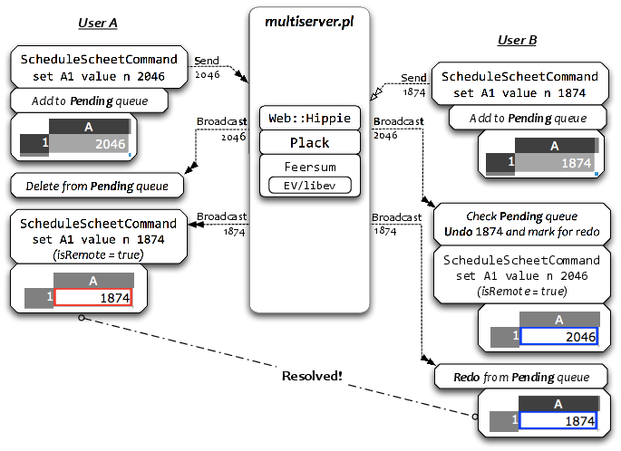
The process used to resolve the conflict is as follows. When a client broadcasts a command, it adds the command to a Pending queue. When a client receives a command, it checks the remote command against the Pending queue.
If the Pending queue is empty, then the command is simply executed as a remote action. If the remote command matches a command in the Pending queue, then the local command is removed from the queue.
Otherwise, the client checks if there are any queued commands that conflict with the received command. If there are conflicting commands, the client first Undoes those commands and marks them for later Redo. After undoing the conflicting commands (if any), the remote command is executed as usual.
When a marked-for-redo command is received from the server, the client will execute it again, then remove it from the queue.
Remote Cursors
Even with race conditions resolved, it is still suboptimal to accidentally overwrite the cell another user is currently editing. A simple improvement is for each client to broadcast its cursor position to other users, so everyone can see which cells are being worked on.
To implement this idea, we add another broadcast handler to the MoveECellCallback event:
editor.MoveECellCallback.broadcast = function(e) {
hpipe.send({
type: 'ecell',
data: e.ecell.coord
});
};
$(hpipe).bind("message.ecell", function (e, d) {
var cr = SocialCalc.coordToCr(d.data);
var cell = SocialCalc.GetEditorCellElement(editor, cr.row, cr.col);
// ...decorate cell with styles specific to the remote user(s) on it...
});
To mark cell focus in spreadsheets, it’s common to use colored borders. However, a cell may already define its own border property, and since border is mono-colored, it can only represent one cursor on the same cell.
Therefore, on browsers with support for CSS3, we use the box-shadow property to represent multiple peer cursors in the same cell:
/* Two cursors on the same cell */
box-shadow: inset 0 0 0 4px red, inset 0 0 0 2px green;
Figure 20 shows how the screen would look with four people editing on the same spreadsheet.
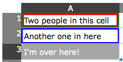
Lessons Learned
We delivered SocialCalc 1.0 on October 19th, 2009, the 30th anniversary of the initial release of VisiCalc. The experience of collaborating with my colleagues at Socialtext under Dan Bricklin’s guidance was very valuable to me, and I’d like to share some lessons I learned during that time.
Chief Designer with a Clear Vision
In (The Design of Design: Essays from a Computer Scientist), Fred Brooks argues that when building complex systems, the conversation is much more direct if we focus on a coherent design concept, rather than derivative representations. According to Brooks, the formulation of such a coherent design concept is best kept in a single person’s mind:
Since conceptual integrity is the most important attribute of a great design, and since that comes from one or a few minds working uno animo, the wise manager boldly entrusts each design task to a gifted chief designer.
In the case of SocialCalc, having Tracy Ruggles as our chief user-experience designer was the key for the project to converge toward a shared vision. Since the underlying SocialCalc engine was so malleable, the temptation of feature creep was very real. Tracy’s ability to communicate using design sketches really helped us present features in a way that feels intuitive to users.
Wikis for Project Continuity
Before I joined the SocialCalc project, there was already over two years’ worth of ongoing design and development, but I was able to catch up and start contributing in less than a week, simply due to the fact that everything is in the wiki. From the earliest design notes to the most up-to-date browser support matrix, the entire process was chronicled in wiki pages and SocialCalc spreadsheets.
Reading through the project’s workspace brought me quickly to the same page as others, without the usual hand-holding overhead typically associated with orienting a new team member.
This would not be possible in traditional open source projects, where most conversation takes place on IRC and mailing lists and the wiki (if present) is only used for documentations and links to development resources. For a newcomer, it’s much more difficult to reconstruct context from unstructured IRC logs and mail archives.
Embrace Time Zone Differences
David Heinemeier Hansson, creator of Ruby on Rails, once remarked on the benefit of distributed teams when he first joined 37signals. "The seven time zones between Copenhagen and Chicago actually meant that we got a lot done with few interruptions." With nine time zones between Taipei and Palo Alto, that was true for us during SocialCalc’s development as well.
We often completed an entire Design-Development-QA feedback cycle within a 24-hour day, with each aspect taking one person’s 8-hour work day in their local daytime. This asynchronous style of collaboration compelled us to produce self-descriptive artifacts (design sketch, code and tests), which in turn greatly improved our trust in each other.
Optimize for Fun
In my 2006 keynote for the CONISLI conference (–O$fun$: Optimizing for Fun), I summarized my experience leading a distributed team implementing the Perl 6 language into a few observations. Among them, Always have a Roadmap, Forgiveness > Permission, Remove deadlocks, Seek ideas, not consensus, and Sketch ideas with code are particularly relevant for small distributed teams.
When developing SocialCalc, we took great care in distributing knowledge among team members with collaborative code ownership, so nobody would become a critical bottleneck.
Furthermore, we pre-emptively resolved disputes by actually coding up alternatives to explore the design space, and were not afraid of replacing fully-working prototypes when a better design arrived.
These cultural traits helped us foster a sense of anticipation and camaraderie despite the absence of face-to-face interaction, kept politics to a minimum, and made working on SocialCalc a lot of fun.
Drive Development with Story Tests
Prior to joining Socialtext, I’ve advocated the “interleave tests with the specification” approach, as can be seen in the Perl 6 specification7, where we annotate the language specification with the official test suite. However, it was Ken Pier and Matt Heusser, the QA team for SocialCalc, who really opened my eyes to how this can be taken to the next level, bringing tests to the place of executable specification.
In Chapter 16 of (Beautiful Testing), Matt explained our story-test driven development process as follows:
The basic unit of work is a "story," which is an extremely lightweight requirements document. A story contains a brief description of a feature along with examples of what needs to happen to consider the story completed; we call these examples "acceptance tests" and describe them in plain English.
During the initial cut of the story, the product owner makes a good-faith first attempt to create acceptance tests, which are augmented by developers and testers before any developer writes a line of code.
These story tests are then translated into wikitests, a table-based specification language inspired by Ward Cunningham’s FIT framework8, which drives automated testing frameworks such as Test::WWW::Mechanize9 and Test::WWW::Selenium10.
It’s hard to overstate the benefit of having story tests as a common language to express and validate requirements. It was instrumental in reducing misunderstanding, and has all but eliminated regressions from our monthly releases.
Open Source With CPAL
Last but not least, the open source model we chose for SocialCalc makes an interesting lesson in itself.
Socialtext created the Common Public Attribution License11 for SocialCalc. Based on the Mozilla Public License, CPAL is designed to allow the original author to require an attribution to be displayed on the software’s user interface, and has a network-use clause that triggers share-alike provisions when derived work is hosted by a service over the network.
After its approval by both the Open Source Initiative12 and the Free Software Foundation13, we’ve seen prominent sites such as Facebook14 and Reddit15 opting to release their platform’s source code under the CPAL, which is very encouraging.
Because CPAL is a “weak copyleft” license, developers can freely combine it with either free or proprietary software, and only need to release modifications to SocialCalc itself. This enabled various communities to adopt SocialCalc and made it more awesome.
There are many interesting possibilities with this open-source spreadsheet engine, and if you can find a way to embed SocialCalc into your favorite project, we’d definitely love to hear about it.